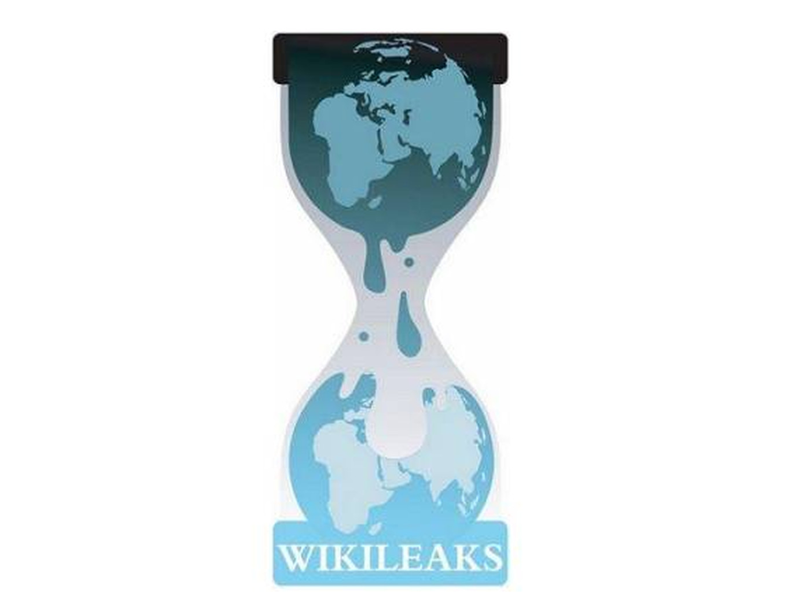

Julian Paul Assange (born 3 July 1971) is an Australian computer programmer, publisher and journalist. He is a spokesman and editor-in-chief of WikiLeaks, which is a website that posts news leaks, which he started in 2006, to practice what he called “scientific journalism”—i.e., providing primary source materials with a minimum of editorial commentary—Assange, through WikiLeaks, released thousands of internal or classified documents from an assortment of government and corporate entities. He was inspired to create WikiLeaks by Daniel Ellsberg’s 1971 release of the Pentagon Papers.
He also made a program called Rubberhose to hide secret information. In 2012, facing extradition to Sweden, he was granted political asylum by Ecuador and took refuge at the Embassy of Ecuador, London. On 11 April 2019, Ecuador withdrew Assange's asylum and he was arrested by the Metropolitan Police shortly afterwards. The extradition to the United States hearing for Assange began in London on February 24, 2020.
WikiLeaks
WikiLeaks: WikiLeaks is an international non-profit organisation that publishes news leaks and classified media provided by anonymous sources. The group has released a number of prominent document caches. Early releases included documentation of equipment expenditures and holdings in the Afghanistan war, an operating procedures manual for the U.S. prison at Guantanamo Bay, Cuba. WikiLeaks came to international attention in 2010 when it published a series of leaks, which included the Baghdad airstrike Collateral Murder video (April 2010), the Afghanistan war logs (July 2010), the Iraq war logs (October 2010), and Cablegate (November 2010). After the 2010 leaks, the United States government launched a criminal investigation into WikiLeaks. During the 2016 US Democratic Party presidential primaries, WikiLeaks hosted a searchable database of emails sent or received by presidential candidate Hillary Clinton while she was Secretary of State.